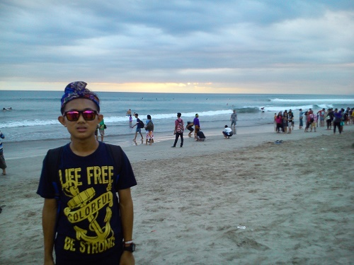
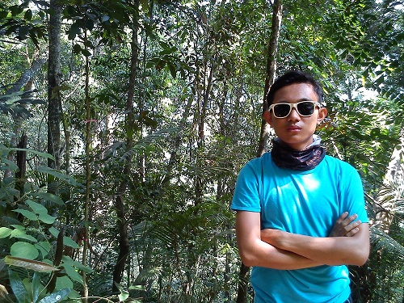
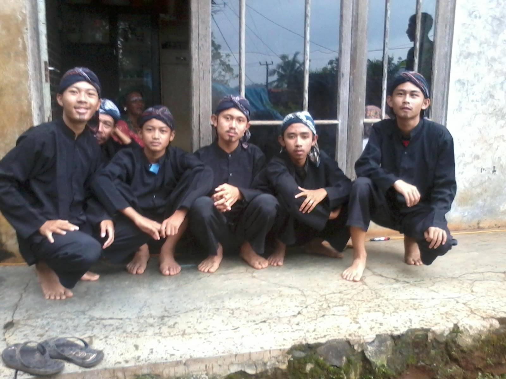
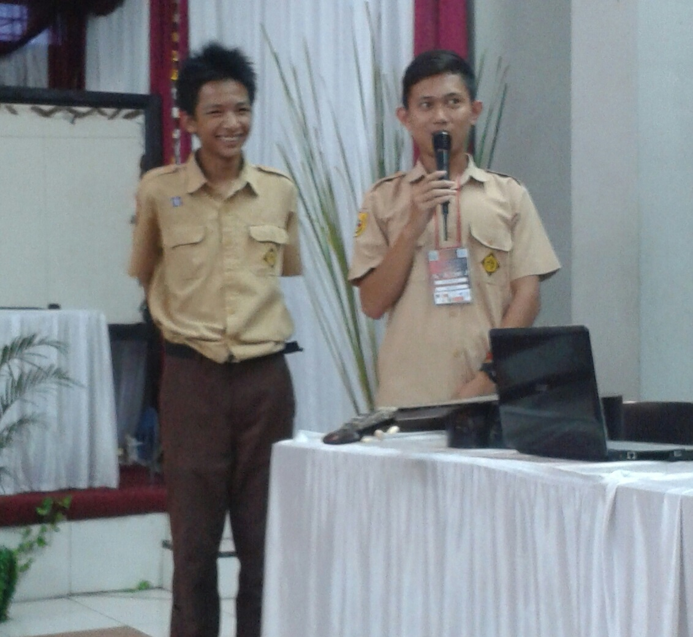

Welcome in My Portfolio
I'm Muhammad Nur Ali
Profil
Hello guys!!! Perkenalkan nama saya Muhammad Nur Ali, biasa dipanggil ali, nuy atau nur. Saya lahir di Sumedang pada tanggal 06 Juli 1997, berjenis kelamin laki-laki. Ayah saya bernama Masyruri, dia seorang pegawai swasta. Ibu saya bernama Darmilah, dia seorang guru dan ibu rumah tangga. Saya anak pertama dari dua bersaudara. Saya mempunyai satu adik perempuan bernama Ismatul Maula, dia sekolah kelas XII di SMPN 4 Sumedang.
Portofolio
Latar Belakang Pendidikan
Saya mulai pendidikan di TK Murai Sejahtera pada tahun 2002, selanjutnya pada tahun 2003 saya masuk SDN Tenjonagara, karena pada saat itu jumlah muridnya banyak, sehingga ada pembagian kelompok kelas, yaitu kelas A dan kelas B, saya di tempatkan di kelas B. Setelah lulus dari SDN Tenjonagara pada tahun 2009 saya melanjutkan pendidikan ke SMPN 3 Sumedang. Ketika tahun 2009 saya di tempatkan dikelas 7b, tahun 2010 dikelas 8b dan tahun 2011 dikelas 9b. Lulus dari SMPN 3 Sumedang tahun 2012, selanjutnya saya melanjutkan pendidikan ke SMAN 1 Sumedang, pada tahun 2012 saya di tempatkan di kelas 10-7, selanjutnya pada tahun 2013 saya memilih jurusan IPA, ditempatkan dikelas 11 IPA 6, lalu tahun 2014 saya ditempatkan di kelas 12 IPA 6. Lulus dari SMAN 1 Sumedang tahun 2015, saya melanjutkan pendidikan ke jengjang yang lebih tinggi, saya memilih jurusan Teknik Informatika di Universitas Pasundan.
Karena saya menyukai komputer dan pingin mempelajari bahasa inggris, akhirnya pada tahun 2012 saya mengikuti kursus bahasa inggris dan kursus komputer. Pada tahun 2014 saya mengikuti lomba dan seminar tata letak kota Sumedang. Selanjutnya pada tahun 2015 sebelum lulus SMA, saya mengikuti kursus di Ganesa Operation, yang mempelajari semua mata pelajaran SMA.
Pengalaman Organisasi
Saat SMA saya mengikuti eksta kulikuler Kelompok Ilmiah Remaja(KIR), disana setiap orang yang sah masuk eksta kulikuler KIR mempunyai nama panggilan unik, disana saya mempunyai nama Histrix Brachyura yang artinya landak. KIR ini eksta kurikuler yang sering mengadakan sharing-sharing, ada kegiatan yang setiap tahun diadakan yaitu Lomba Cepat Tepat Matematika(LCTM) se-Jawa Barat, pada LCTM ke-XXVII saya menjabat sebagai Ketua 1, disini saya banyak belajar cara ber-organisasi.
Kemampuan
Saya memiliki banyak hobi, di bidang olahraga saya menyukai berbagai olahraga, seperti voli, jogging, renang dan tenis meja. Saya juga menyukai teknologi, karena itu saya masuk jurusan Teknik Informatika dan menycoba explorasi mengenai komputer, alhamdullilah saya dapat menguasai berbagai software Microsoft Office Word, Microsoft Office Excel, Microsoft Office Excel, Adobe Photoshop, Vegas Pro, dll. Bukan hanya komputer, saya juga suka oprek-oprek smartphone, seperti meroot dan mengganti rom. Saat ini saya sedang belajar bahasa pemograman. Selain bahasa Indonesia, saya juga bisa bahasa Inggris dan bahasa Jepang.
Gallery

Gambar diatas saat berkunjung ke Bali bersama SMAN 1 Sumedang, melakukan penelitian untuk tugas akhir yaitu karya tulis ilmiah.
Gambar diatas menunjukan saat melakukan pendakian gunung.
Gambar diatas saat akan mengikuti lomba tari tradisional bersama pemuda Cirangkong.
Gambar diatas menunjukan saat perlombaan Lomba Cepat Tepat Matematika se-Jawa Barat ke-XXVII bersama Kelompok Ilmiah Remaja Adinira.